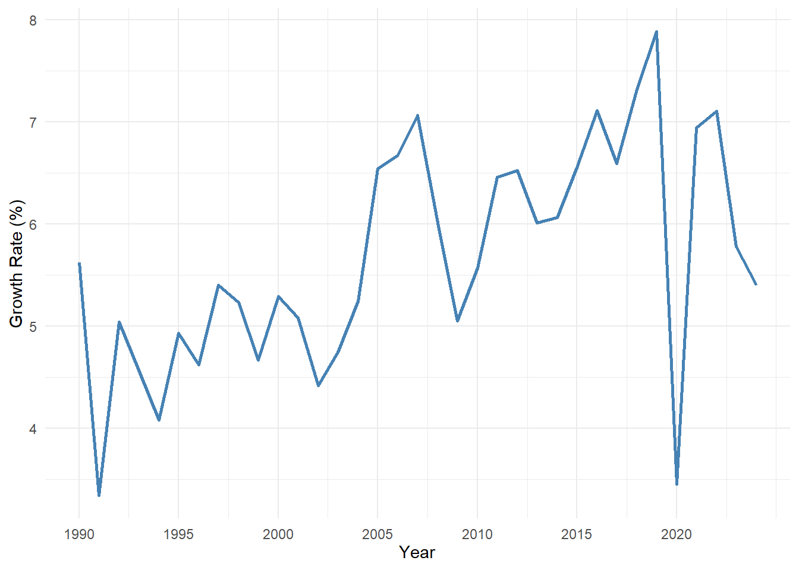

1 Data and Statistics
1.1 Statistics
Statistics is defined as the art and science of collecting, analyzing, presenting, and interpreting data.
Particularly in business and economics, the information provided by collecting, analyzing, presenting, and interpreting data gives managers and decision makers a better understanding of the business and economic environment and thus enables them to make more informed and better decisions.
1.2 Types of statistics
Descriptive Statistics
Most of the statistical information in newspapers, magazines, company reports, and other publications consists of data that are summarized and presented in a form that is easy for the reader to understand. Such summaries of data, which may be tabular, graphical, or numerical, are referred to as descriptive statistics.
Inferential statistics (Statistical Inference)
Many situations require information about a large group of elements (individuals, companies, voters, households, products, customers, and so on). But, because of time, cost, and other considerations, data can be collected from only a small portion of the group. The larger group of elements in a particular study is called the population, and the smaller group is called the sample. Formally, we use the following definitions.
Population A population is the set of all elements of interest in a particular study.
Sample A sample is a subset of the population.
The process of conducting a survey to collect data for the entire population is called a census.
The process of conducting a survey to collect data for a sample is called a sample survey.
As one of its major contributions, statistics uses data from a sample to make estimates and test hypotheses about the characteristics of a population through a process referred to as statistical inference.
1.3 Applications in Business and Economics
Accounting Public accounting firms use statistical sampling procedures when conducting audits for their clients.
Finance Financial analysts use a variety of statistical information to guide their investment recommendations.
Marketing Electronic scanners at retail checkout counters collect data for a variety of marketing research applications.
Production Today’s emphasis on quality makes quality control an important application of statistics in production.
Economics Economists frequently provide forecasts about the future of the economy or some aspect of it. They use a variety of statistical information in making such forecasts.
1.4 Data
Data are the facts and figures collected, analyzed, and summarized for presentation and interpretation. All the data collected in a particular study are referred to as the data set for the study.
Table 1.1 shows a data set containing information for 25 mutual funds that are part of the Morningstar Funds500 for 2008.
| Fund Name | Fund Type | Net Asset Value ($) | 5-Year Average Return (%) | Expense Ratio (%) | Morningstar Rank |
|---|---|---|---|---|---|
| American Century Intl. Disc | IE | 14.37 | 30.53 | 1.41 | 3-Star |
| American Century Tax-Free Bond | FI | 10.73 | 3.34 | 0.49 | 4-Star |
| American Century Ultra | DE | 29.84 | 15.04 | 0.97 | 3-Star |
| Artisan Small Cap | DE | 16.52 | 18.87 | 1.25 | 4-Star |
| Brown Cap Small | DE | 33.97 | 15.53 | 1.08 | 3-Star |
| DFA U.S. Micro Cap | DE | 18.33 | 17.57 | 0.52 | 5-Star |
| Fidelity Contrafund | DE | 49.80 | 12.36 | 0.89 | 4-Star |
| Fidelity Overseas | IE | 48.99 | 23.06 | 1.06 | 3-Star |
| Fidelity Sel Electronics | DE | 22.40 | 17.70 | 0.89 | 4-Star |
| Fidelity Sh-Term Bond | FI | 17.46 | 4.10 | 0.45 | 3-Star |
| Gabelli Asset AAA | DE | 48.84 | 15.70 | 1.36 | 4-Star |
| Kalmar Grwth Sm Cp | DE | 40.13 | 16.20 | 1.25 | 3-Star |
| Mairs & Power Grwth | DE | 27.64 | 12.70 | 0.69 | 5-Star |
| Matthews Pacific Tiger | IE | 40.07 | 19.51 | 1.05 | 4-Star |
| Oakmark I | DE | 37.78 | 9.57 | 1.06 | 4-Star |
| PIMCO Emerg Mkts Bd D | FI | 26.39 | 12.31 | 1.00 | 3-Star |
| RS Value A | DE | 22.67 | 15.14 | 1.44 | 3-Star |
| T. Rowe Price Latin Am. | IE | 33.59 | 32.06 | 1.24 | 4-Star |
| T. Rowe Price Mid Val | DE | 26.37 | 14.40 | 0.80 | 4-Star |
| Thornburg Int’l Val | IE | 21.10 | 23.64 | 1.40 | 5-Star |
| USAA Income | FI | 12.10 | 5.13 | 0.62 | 3-Star |
| Vanguard Sel Val | DE | 21.23 | 16.20 | 0.44 | 4-Star |
| Vanguard Sh-Tm TE | FI | 11.20 | 3.80 | 0.13 | 3-Star |
| Vanguard Sm Cp Idx | DE | 25.32 | 17.01 | 0.23 | 5-Star |
| Wasatch Sm Cp Growth | DE | 35.41 | 13.98 | 1.19 | 4-Star |
1.5 Elements, Variables, and Observations
Elements are the entities on which data are collected. For the data set in Table 1.1 each individual mutual fund is an element: the element names appear in the first column. With 25 mutual funds, the data set contains 25 elements.
A variable is a characteristic of interest for the elements.
The data set in includes the following five variables:
Fund Type: The type of mutual fund
Net Asset Value ($): The closing price per share on December 31, 2007
5-Year Average Return (%): The average annual return for the fund over the past 5 years
Expense Ratio: The percentage of assets deducted each fiscal year for fund expenses
Morningstar Rank: The overall risk-adjusted star rating for each fund; Morningstar ranks go from a low of 1-Star to a high of 5-Stars
Observation Measurements collected on each variable for every element in a study provide the data. The set of measurements obtained for a particular element is called an observation.
- Referring to Table 1.1 we see that the set of measurements for the first observation (American Century Intl. Disc) is IE, 14.37, 30.53, 1.41, and 3-Star.
1.6 Scales of Measurement
Data collection requires one of the following scales of measurement: nominal, ordinal, interval, or ratio .
When the data for a variable consist of labels or names used to identify an attribute of the element, the scale of measurement is considered a nominal scale ( Example: Fund Type).
The scale of measurement for a variable is called an ordinal scale if the data exhibit the properties of nominal data and the order or rank of the data is meaningful ( Example: Morningstar Rank).
The scale of measurement for a variable is an interval scale if the data have all the properties of ordinal data and the interval between values is expressed in terms of a fixed unit of measure. Interval data are always numeric ( Example: Temperature ).
The scale of measurement for a variable is a ratio scale if the data have all the properties of interval data and the ratio of two values is meaningful ( Example: distance, height, weight,time etc.).
This scale requires that a zero value be included to indicate that nothing exists for the variable at the zero point.
1.7 Quantitative and Categorical and Data
Data can be classified as either quantitative or categorical .
Quantitative Data (Numerical Data)
Data that represents numerical values.
Example: Heights of people, temperatures, test scores.
Subtypes:
Discrete Data: Countable values (e.g., number of students in a class).
Continuous Data: Measurable values that can take any value within a range (e.g., weight, time).
Qualitative Data (Categorical Data)
Data that represents categories or labels.
Example: Colors of cars, types of animals, survey responses (e.g., yes/no).
Subtypes:
Nominal Data: Categories without a natural order (e.g., gender, blood type).
Ordinal Data: Categories with a meaningful order (e.g., rankings, education levels).
The statistical analysis appropriate for a particular variable depends upon whether the variable is categorical or quantitative.
1.8 Cross-Sectional and Time Series Data
For purposes of statistical analysis, distinguishing between cross-sectional data and time series data is important.
Cross-sectional data are data collected at the same or approximately the same point in time. The data in Table 1.1 are cross-sectional because they describe the five variables for the 25 mutual funds at the same point in time.
Time series data are data collected over several time periods. For example, the time series in Figure 1.1 shows the GDP gowth (%) of Bangladesh 1990 and 2024.
1.9 Data vs. Information
Data: The raw, unorganized facts, symbols, or measurements collected from a source. On its own, data is “context-poor” and typically lacks meaning.
- Examples: Individual test scores, a list of daily temperatures, or raw survey responses.
Information: Data that has been processed, organized, or structured to make it meaningful and useful. It provides context and answers specific questions.
- Examples: The average test score of a class, a trend line showing rising temperatures, or a summary report of survey findings.
1.10 Exercise
- What is the level of measurement / categorical (nominal, ordinal ) or quantitative (discrete, continuous) for each of the following variables?
- Student IQ ratings.
- Distance students travel to class.
- The jersey numbers of a sorority soccer team.
- A classification of students by state of birth.
- A summary of students by academic class—that is, freshman, sophomore, junior, and senior.
- Number of hours students study per week.
- What is the level of measurement / categorical (nominal, ordinal ) or quantitative (discrete, continuous) for these items related to the newspaper business?
- The number of papers sold each Sunday during 2011.
- The departments, such as editorial, advertising, sports, etc.
- A summary of the number of papers sold by county.
- The number of years with the paper for each employee.
- What is the level of measurement / categorical (nominal, ordinal ) or quantitative (discrete, continuous) for these following items?
- Salary
- Gender
- Sales volume of MP3 players
- Soft drink preference
- Temperature
- SAT scores
- Student rank in class
- Rating of a finance professor
- Number of home computers
- For each of the following, determine whether the group is a sample or a population.
- The participants in a study of a new cholesterol drug.
- The drivers who received a speeding ticket in Kansas City last month.
- Those on welfare in Cook County (Chicago), Illinois.
- The 30 stocks reported as a part of the Dow Jones Industrial Average.